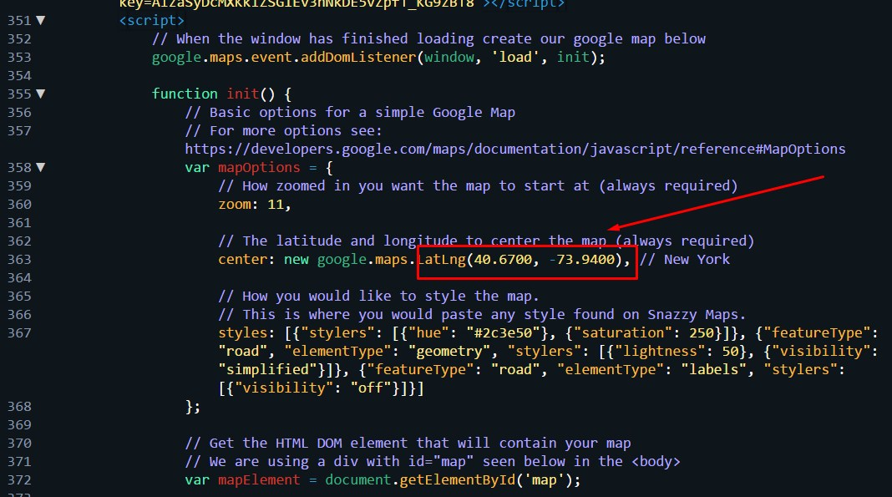
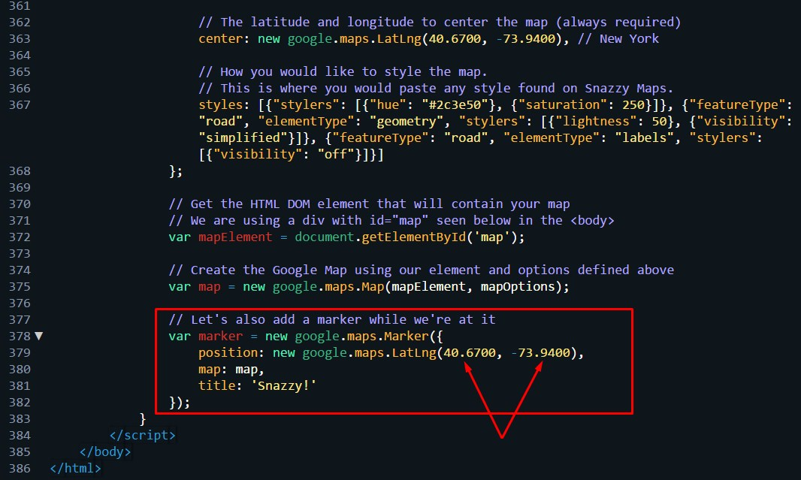

Thank you for purchasing 'Nishue' If you have any questions that are beyond the scope of this help file, please feel free to submit a ticket at our Support Forum. Thanks so much!
Nishue - Bitcoin & Cryptocurrency HTML Template. It is designed for cryptocurrency market analysis.Here have market auto data system tables and cryptocurrency buy and sales system.Nishue is designed by HTML, CSS, JS and Bootstrap..
Nishue is very easy to update and modify, it will adapt your website and brand in no time. Steps for modification and updating are described step by step in this exclusive documentation.
Whole template is divided in to several folders and their content defines by the folder names easily.
Nishue is based upon Twitter Bootstrap css framework that is very easy to use and adapt. It follows the mobile first approach to make the website readily available for all devices and screen sizes. Bootstrap grid is based upon 12 columns that are well defined in the bootstrap.css file inside the css folder. You can get to know about the grid system in detail from this url http://getbootstrap.com/css/#grid
Nishue used Linear icon fonts for its icons requirement and no images has been used for any icon. A complete list of icons along with the class names can be found here: https://linearicons.com/free
To use an icon on any page of the theme use the below code:
Nishue used also font awesome icon fonts for its icons requirement and no images has been used for any icon. A complete list of icons along with the class names can be found here: http://fontawesome.io/cheatsheet/
To use an icon on any page of the theme use the below code:
All icons class name will always start with the fa- . There are several sizes for icons are predefined in the fonts.css inside css folder. i.e. fa-lg, fa-2x, fa-3x
Go to your folder and search a file with .html extension.
Just open this file in your editor like brackets or sublime text or notepad plus.
here you will get all of the html code of this template with commenting that indicates you which html are for which section or which div.
if you want to edit the html of header then search header like shown below
Go to your folder and search a folder named css.
Enter into it and then search a file named "style.css".
Just open this file in your editor like brackets or sublime text or notepad plus.
here you will get all of the css of this template with commenting that indicates you which styles are for which section or which div.
if you want to edit the css of header then search header style like shown below
Go to your folder and search a folder named js.
Enter into it and then search a file named "custom.js".
Just open this file in your editor like brackets or sublime text or notepad plus.
here you will get all of the js of this template with commenting that indicates you which js are for which slider or which element.
if you want to edit the js of slider then search slider like shown below
Go to your folder and search a folder named gmap.
Enter into it and open the file named "googlemap.js".
Just open this file in your editor like brackets or sublime text or notepad plus.
Then Just set the value of latitude & Longitude of your place that shown below
At the same file & same page just find a comment "Let's also add a marker while we're at it". Then Just set the same value of latitude & Longitude. Now Look it is done.
How do I open the template?
The template is 100% ready to use, with no compilation needed. Just unzip, go to the html folder and open the index.html file in your browser using a development server
How do I start a simple local development server?
Make sure you have the latest PHP version installed. Then go to the html folder and run the php -S localhost:4000 command from the console. You should see the template running at http://localhost:4000
How do I install/uninstall a dependency with Bower?
Run bower install <dependency-name> --save. After this then you should add the installed dependencies to the .html files.
I have a question, but it is not listed here, what can I do?
Send us an email to bdtask@gmail.com or contact us through our Theme Forest profile and we'll do our best to try to help you.
I would like to see a new plugin installed or functionality developed in Nishue - Bitcoin and Cryptocurrency HTML Template, is it possible?
We are always trying to improve and adding new functionalities and plugins to Nishue - Bitcoin and Cryptocurrency HTML Template , so every request is welcomed and will be evaluated.
I found a bug, what can I do?
Please let us know and we'll do our best to fix it as soon as possible
Are updates free?
Yes, they are and always will be
Bootstrap : css front-end framework. http://getbootstrap.com/
Google fonts : Pacifico https://fonts.googleapis.com/css?family=Pacifico
Google fonts : Nanum https://fonts.googleapis.com/css?family=Nanum+Myeongjo:400,700,800
Google fonts : Catamaran https://fonts.googleapis.com/css?family=Catamaran:100,200,300,400,500,600,700,800,900
Google fonts : Raleway https://fonts.googleapis.com/css?family=Raleway:100,100i,200,200i,300,300i,400,400i,500,500i,600,600i,700,700i,800,800i,900,900i
jQuery : fast, small, and feature-rich JavaScript library. http://jquery.com/
Snazzy Maps : https://snazzymaps.com/
Font Awesome : The complete set of 675 icons in Font Awesome 4.7.0 http://fontawesome.io/icons/
Linearicons : https://linearicons.com/free
Bootsnav : Bootsnav - Bootstrap menu multi purpose header http://bootsnav.danurstrap.com/
Magnific Popup : http://dimsemenov.com/plugins/magnific-popup/
OWL Carousel :Touch enabled jQuery plugin that lets you create beautiful responsive carousel slider. http://www.landmarkmlp.com/js-plugin/owl.carousel/
Amcharts :JavaScript Charts & Maps. https://www.amcharts.com/
particles.js :A lightweight JavaScript library for creating particles https://vincentgarreau.com/particles.js/
bootstrap-select :Bootstrap-select is a jQuery plugin that utilizes Bootstrap's dropdown.js to style and bring additional functionality to standard select elements. https://silviomoreto.github.io/bootstrap-select/
Parallax Background :Simple Parallax Background https://erensuleymanoglu.github.io/parallax-background/
Wow js : https://wowjs.uk/